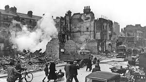
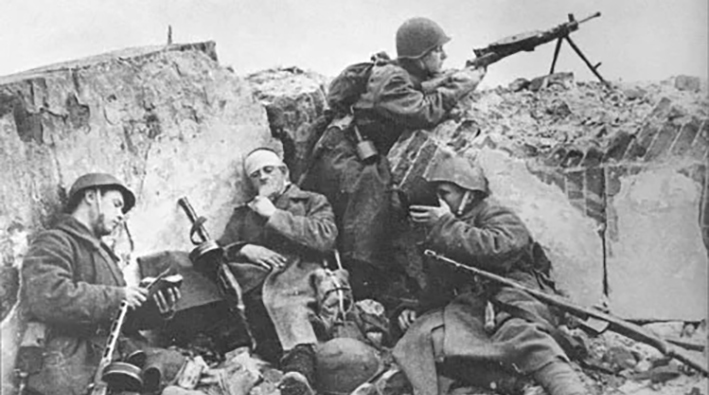
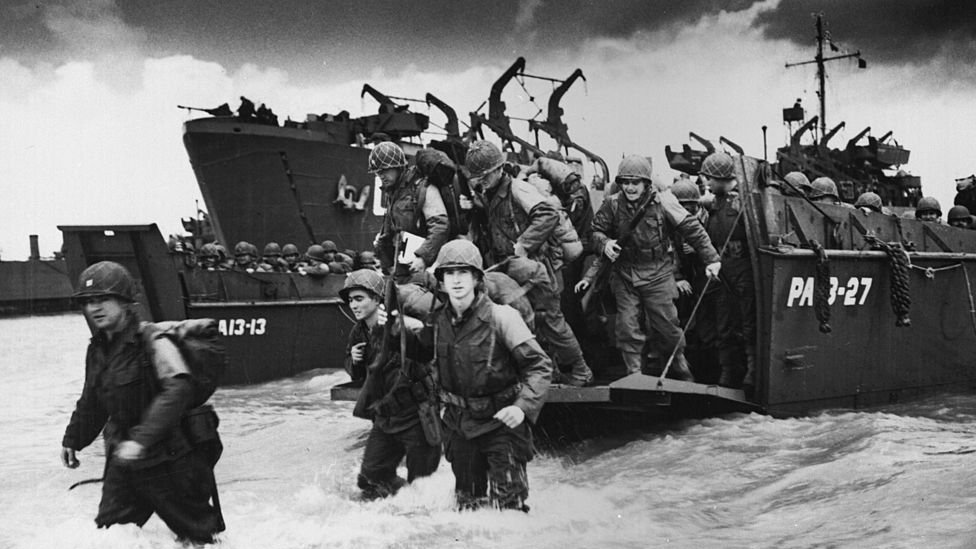
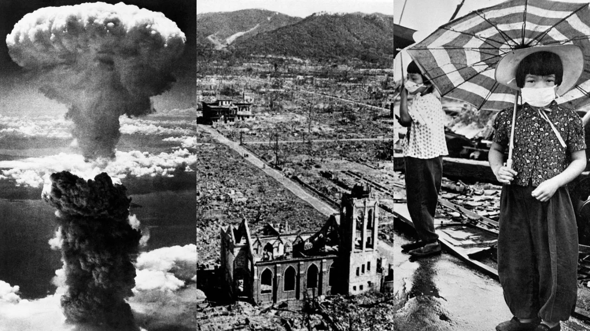
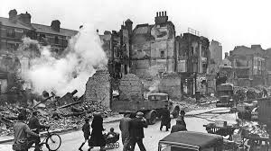
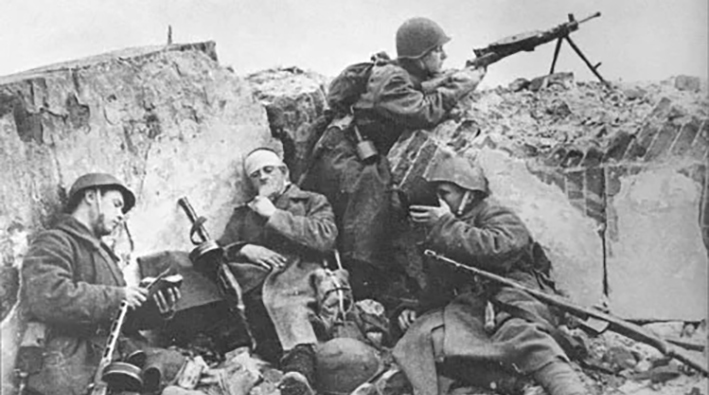
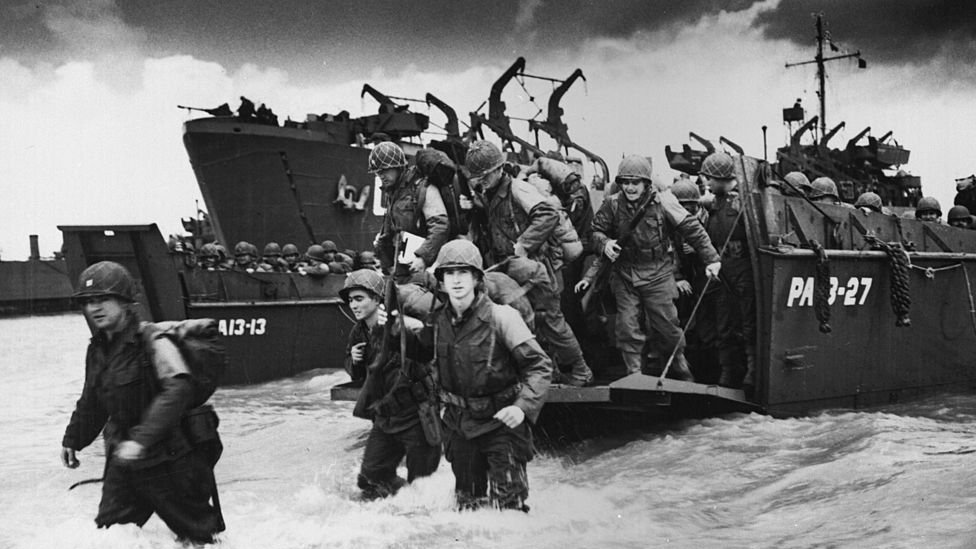
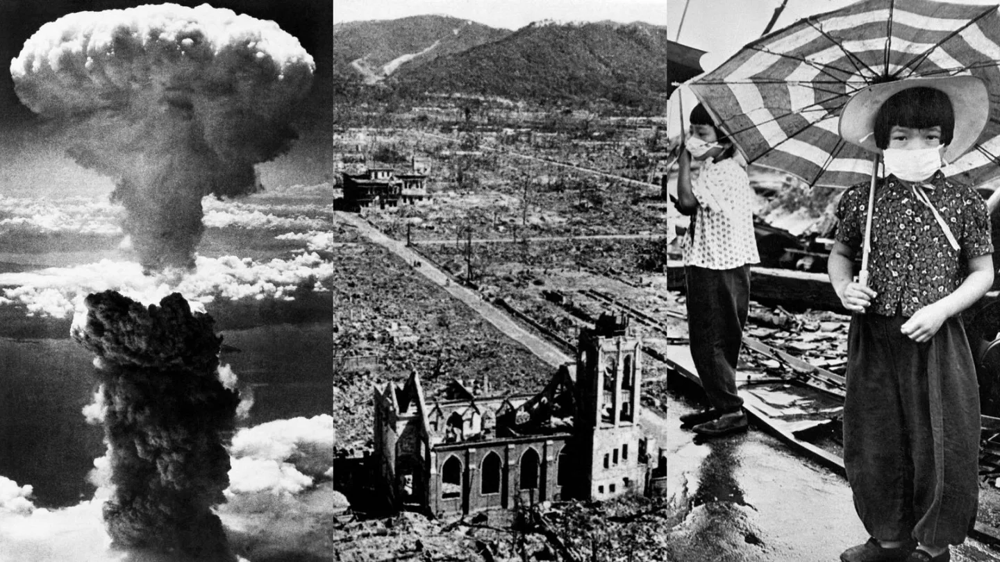

La Segunda Guerra Mundial fue un conflicto armado a escala global que se desarrolló entre 1939 y 1945 . Involucró a la gran mayoría de las naciones del mundo, incluyendo a todas las grandes potencias, que se agruparon en dos alianzas militares enfrentadas: los Aliados y las Potencias del Eje . Fue la guerra más mortífera de la historia de la humanidad, con un impacto devastador en la demografía, la geografía y la política mundial.
Causas del Conflicto
Las raíces de la Segunda Guerra Mundial son complejas y se encuentran en una combinación de factores que surgieron tras la Primera Guerra Mundial:
El Tratado de Versalles: Las duras condiciones impuestas a Alemania tras la Primera Guerra Mundial (reparaciones, pérdida de territorio, limitaciones militares) generaron un profundo resentimiento y un deseo de revancha que fue capitalizado por el ultranacionalismo.
El ascenso de regímenes totalitarios: En la década de 1930, el ascenso de dictaduras agresivas y expansionistas en Alemania (nazismo con Adolf Hitler ), Italia (fascismo con Benito Mussolini ) y Japón (militarismo imperialista) fue clave. Estos regímenes buscaban expandir sus territorios y esferas de influencia a través de la fuerza.
La Gran Depresión de 1929: La crisis económica global de 1929 desestabilizó las democracias, exacerbó las tensiones sociales y económicas, y llevó a muchos países a adoptar políticas proteccionistas y nacionalistas que limitaron la cooperación internacional.
El expansionismo japonés: Japón, escaso de recursos naturales, inició una política expansionista en Asia, invadiendo Manchuria en 1931 y China en 1937, lo que sentó un precedente de agresión no controlada.
El fracaso de la Sociedad de Naciones: La organización internacional creada para prevenir futuros conflictos demostró ser ineficaz para detener las agresiones de las potencias del Eje, en parte por la falta de apoyo de potencias clave como Estados Unidos.
La política de apaciguamiento: Las democracias occidentales (principalmente Gran Bretaña y Francia) adoptaron una política de "apaciguamiento" frente a las agresiones de Hitler (como la anexión de Austria y los Sudetes), buscando evitar una nueva guerra, pero esto solo envalentonó al régimen nazi.
Bandos Enfrentados
Los principales bandos del conflicto fueron:
Potencias del Eje:
Alemania Nazi: Liderada por Adolf Hitler.
Italia Fascista: Liderada por Benito Mussolini.
Imperio del Japón: Liderado por el Emperador Hirohito y Hideki Tōjō.
Otros aliados menores incluyeron a Hungría, Rumania, Bulgaria y Eslovaquia.
Aliados:
Reino Unido: Liderado por Winston Churchill.
Francia: Con su gobierno en el exilio tras la ocupación alemana.
Unión Soviética: Liderada por Iósif Stalin (se unió en 1941 tras la invasión alemana).
Estados Unidos: Liderado por Franklin D. Roosevelt (se unió en 1941 tras el ataque a Pearl Harbor).
China: Que ya estaba en guerra con Japón desde 1937.
Otros países como Canadá, Australia, Nueva Zelanda, Sudáfrica, Polonia, Noruega, Países Bajos, Bélgica, Grecia, Yugoslavia, entre muchos otros.
Principales Frentes y Hechos Clave
La guerra se libró en múltiples frentes y teatros de operaciones:
Frente Europeo Occidental:
Invasión de Polonia (1 de septiembre de 1939): Inicio oficial de la guerra, provocando la declaración de guerra de Gran Bretaña y Francia a Alemania.
Caída de Francia (1940): La rápida y exitosa invasión alemana de Francia, Bélgica, Países Bajos y Luxemburgo.
Batalla de Inglaterra (1940): La defensa aérea británica contra los bombardeos alemanes, que impidió la invasión terrestre.
Día D (Desembarco de Normandía, 6 de junio de 1944): La mayor operación anfibia de la historia, abriendo un segundo frente contra Alemania en Europa occidental.
Frente Oriental (Europa del Este):
Operación Barbarroja (junio de 1941): La invasión alemana de la Unión Soviética, abriendo el frente más grande y sangriento de la guerra.
Batalla de Stalingrado (1942-1943): Punto de inflexión decisivo en el Frente Oriental, donde la URSS logró una victoria crucial que detuvo el avance alemán.
Frente del Pacífico:
Ataque a Pearl Harbor (7 de diciembre de 1941): El ataque sorpresa japonés a la base naval estadounidense, que provocó la entrada de EE. UU. en la guerra.
Batalla de Midway (junio de 1942): Una victoria clave de EE. UU. que detuvo el avance japonés en el Pacífico.
Campañas de "salto de isla en isla": Estrategia estadounidense para avanzar hacia Japón.
Frente del Norte de África y Mediterráneo: Campañas entre los Aliados y el Eje por el control del Mediterráneo y el Canal de Suez.
Holocausto: El genocidio sistemático de seis millones de judíos y millones de otras minorías por parte del régimen nazi.
Fin de la Guerra
La guerra en Europa finalizó con el avance de los Aliados occidentales y el Ejército Rojo soviético hacia Alemania. Adolf Hitler se suicidó el 30 de abril de 1945 , y la Alemania nazi se rindió incondicionalmente el 8 de mayo de 1945 (Día de la Victoria en Europa - V-E Day) .
En el Pacífico, la guerra continuó hasta que Estados Unidos lanzó dos bombas atómicas sobre las ciudades japonesas de Hiroshima (6 de agosto de 1945) y Nagasaki (9 de agosto de 1945) . Japón finalmente se rindió el 2 de septiembre de 1945 (Día de la Victoria sobre Japón - V-J Day) , marcando el fin de la Segunda Guerra Mundial.
Consecuencias de la Segunda Guerra Mundial
Las consecuencias de la guerra fueron inmensas y transformaron el orden mundial:
Pérdidas Humanas y Materiales: Más de 60 millones de muertos (la mayoría civiles), ciudades arrasadas, infraestructuras destruidas y economías devastadas en gran parte de Europa y Asia.
Reconfiguración Geopolítica:
Surgimiento de dos superpotencias: Estados Unidos y la Unión Soviética emergieron como las potencias dominantes, dando origen a la Guerra Fría .
División de Alemania: Alemania fue dividida en cuatro zonas de ocupación que eventualmente formaron la República Federal Alemana (occidental) y la República Democrática Alemana (oriental).
Descolonización: El debilitamiento de las potencias coloniales europeas impulsó los movimientos de independencia en Asia y África.
Creación de las Naciones Unidas (ONU): Fundada en 1945 para promover la paz y la cooperación internacional.
Cambios Sociales y Culturales:
Juicios de Núremberg: Establecieron precedentes importantes en el derecho internacional al juzgar crímenes de guerra y crímenes contra la humanidad.
Avances tecnológicos: Impulsados por la guerra (energía nuclear, misiles, aviación).
Impacto psicológico y social: Generaciones traumatizadas por la violencia, el genocidio y la devastación.
La Segunda Guerra Mundial fue un evento cataclísmico que redefinió el siglo XX y sentó las bases del mundo contemporáneo.
 






